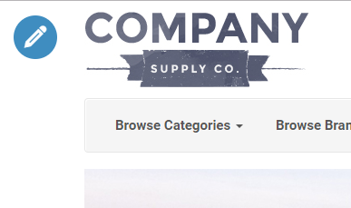
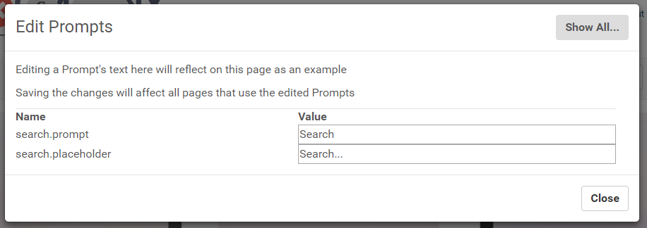
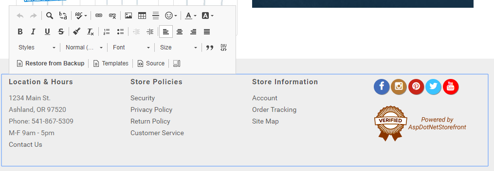
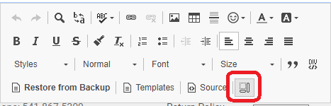
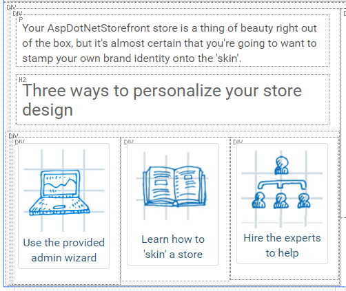
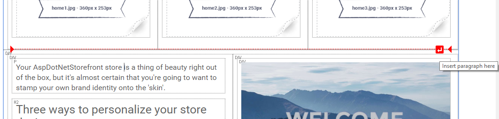
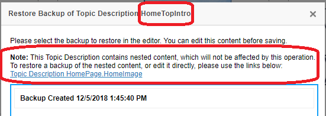

Starting with AspDotNetStorefront version preFIX 1.18 (10.0.19), some site content can be edited by an Admin directly on the page that it is found.
Currently, Topics and Prompts (String Resources) can be edited.
NOTE: Read/Write/Modify permissions for the proper user group (such as IIS/IUSRS) will need to be ensured for the {wwwroot}/Images folder and the {wwwroot}/Skins folder in order for the cart to save and/or overwrite the image files (and any other file type being uploaded/modified through the Editor).
Edit Mode
When browsing the site as an Admin, you should see an Edit icon at the top left of the page

Clicking this icon will prompt you to enter Edit mode.Once you begin editing, the control icons will change:
From left to right:
Save Changes (Green Checkmark): When you are finished editing all content on the page, and want to save your changes to the database.
Discard Changes (Red 'X'): If you want to exit Edit mode and discard any changes you have made.
Edit Prompts (Gray 'Copy' Icon): Clicking this will bring up a list of all Prompts that are visible on this page.You can edit any Prompt here, as well as discard changes to any specific Prompt you have edited.
Session timer (Gray Countdown): This is the time remaining in your Admin session.For security reasons, your session will end at the end of this time.If you need more time, you can simply click this icon to extend your session.
Editing Prompts
Prompts (String Resources) are usually single lines of text, and are used throughout the site.For example, you can edit the prompt next to the 'Search' text box, or the label for the 'Account' drop down menu.
Clicking on a Prompt will pop up an 'Edit Prompts' modal window, filtered down to the Prompt you clicked.In some cases, a single click may select multiple Prompts.You can edit the text here, and see the changes immediately.You can also discard an individual Prompt's change here as well.
Clicking the "Show All..." button in the top right of this modal window will display edit text boxes for all the Prompts that are visible on the current page.

If you are trying to click to expand an item, and the modal window keeps popping up, you can hold 'Shift' while clicking to suppress the 'Edit Prompts' modal window.This can be used to open the 'Browse Categories' dropdown menu, and then click to edit the "more…" Prompt within the menu.
Remember: After making changes to Topics and Prompts, you need to click the green checkmark to save your changes to the database.
Editing Topics
While in Edit mode, you can click on any area of content contained in a Topic.Clicking on a Topic will bring up an Inline Editor toolbar, and allow you to modify the existing content.

Most of the buttons in this toolbar should be familiar.You can adjust font sizes and styles, Undo and Redo changes, add or remove hyperlinks, etc.Feel free to experiment here.If you don't like the way you've changed something, you can "Undo" to revert the change, or just click the big red 'X' located at the top left of the page to discard all your changes and exit Edit mode.
There are a few toolbar items with more complex functionality:
Restore from Backup
If you've saved changes that you want to revert later, you can use the "Restore from Backup" toolbar button.Clicking this toolbar button will bring up a list of saved backups.Hovering over each list item will display a preview of the contents of that backup. Clicking on a backup item in the list will replace the current contents of the selected editor with the backup contents. You can then continue editing the restored content, or click the green checkmark icon at the top left of the page to save your change to the database.
Templates
This toolbar button brings up a list of available pre-created sample content that you can use as a starting point for creating new content.For example, you can insert a responsive grid with 3 columns, and then proceed to add content in each column.The responsive columns will automatically stack into one column when viewed on a mobile device.
The 'Content Templates' popup also has a "Replace actual contents" checkbox.When checked, the existing content in your editor will be replaced with the new template.If unchecked, the new template will be inserted into your existing content.
Source
For advanced users or developers, you can use this button to manually edit the source code of the content in the editor.Be careful when making direct modifications of source code, and always remember that you can revert changes or "Restore from Backup" if you need to undo an edit you've made.
Show Blocks
When this mode is toggled on, it will display dotted lines around each HTML element within your content.This can be particularly helpful if you are having trouble editing content split in different columns or containers.


'Magic Line'
If you are trying to insert a new element between existing elements, it can sometimes be hard to click between element dividers.When you hover over the divide between elements, a red 'Magic Line' should appear in the separation.Clicking on the small red button on the red line will insert a new paragraph in that gap, allowing you to add more content within.This is easier to use with the "Show Blocks" toolbar toggle enabled.

Uploading Images
To upload a new image, use the 'Image' button from the toolbar.You can also use this button to edit an existing image if you select the image first.You can also right click an existing image and then click "Image Properties" to edit an existing image.
Any of the above methods will open an "Image Properties" modal window.From here, you can edit common image properties.
To change the image that is displayed, click "Browse Server".This will open up a file explorer for your web server.You can navigate through image folders, and you can also use this browser to upload new images to the web server.
Uploading Documents
To upload a document for other users to download, you need to create a 'Link' element using the toolbar button. This pops up a 'Link' modal window. Under the 'Link Info' tab, click the "Browse Server" button. This will open a "File Browser" modal window. You can use this window to link to an existing document on the web server, or upload a new document.
Nested Topics
In some cases, you may have one topic nested in another.For example, in the default skin for AspDotNetStorefront, the main banner image on the home page is contained in the topic named 'HomePage.HomeImage'.This topic, and other home page content, are nested in another topic named 'HomeTopIntro'. When you edit this page, there is only one editor window for both of the above topics. The editor window contains all the content for both of the above topics.
After you edit the content in both topics and click to save changes, the changes you made in "HomePage.HomeImage" are automatically saved to that topic, and the changes you made in "HomeTopIntro" are automatically saved as well.
This is intuitive while you are editing, but what if you want to restore a backup? "HomePage.HomeImage" and "HomeTopIntro" both have their own sets of backups.
If you want to restore a backup of the outermost "HomeTopIntro" topic, you can use the inline editor toolbar button.This operation will not change the current contents of the "HomePage.HomeImage" topic, even though "HomePage.HomeImage" is nested inside "HomeTopIntro."
To restore a backup of "HomePage.HomeImage", you will need to go into the Admin console and edit that topic directly. For your convenience, direct links to edit nested topics are provided if you select the "Restore from Backup" toolbar option on the outermost topic.

Editing the Navigation Menu
In this initial version of Inline Editing, editing the navigation menu is difficult.If you are using a site skin that has the navigation menu contained within a topic, you can make some changes using inline editing.Functionality is limited, though.
If you want to add new menu items, you will probably need to have a developer manually edit the source HTML.
We hope to improve this functionality in a future release, and make navigation menu editing more user friendly.
Topic Version Scheduler
In the site versions 10.0.24+ there is a new button in the lower right corner of the tool bar called "Schedule".
You can create and schedule different versions of a topic using this function. Please refer to the Topic Version Scheduler page for details.
Unsupported Scenarios
Currently, there are a few scenarios where Inline Editing is not supported:
Editing content while on a mobile device
Editing of file-based topics
Editing a store with more than one locale configured
Editing content with embedded custom javascript
For Developers
AspDotNetStorefront is using “CKEditor 4” for its inline editor functionality. There is thorough documentation online if you would like to customize this plugin.
If you would like to enable Inline Editor functionality for your custom skin, all you need to do is add one line to the end of "\Views\Shared\_BodyClose.cshtml":
This will render our jQuery code that sets up the editor windows and handles all the edit logic and operations on the client side.This is mostly contained in one view: "\Views\InlineEdit\_InlineEditHeader.cshtml"


 Email This Article
Email This Article Previous Article
Previous Article Next Article
Next Article